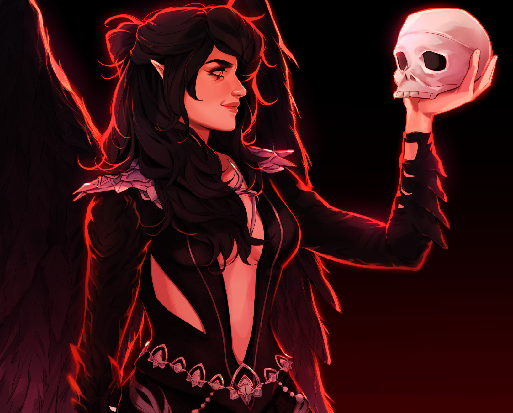

Here is a look at both my professional and personal digital artwork:

I did both of these pieces for my art class, but I also found a lot of enjoyment in them.
This is a commissioned piece I did of a client's Final Fantasy character a few months ago.